RESEARCH AREAS
研究テーマ
過去の研究テーマと現在の研究テーマを一つのページに掲載しています。旧サイトで「準備中」だったテーマはその旨を明記しています。
磁気特性測定・励磁波形制御
電磁鋼板の任意波形（インバータ）励磁、PWM励磁、6ステップ励磁、正弦波励磁でのB-H特性・鉄損評価。波形制御、単板磁気特性測定、計測システムの改良。
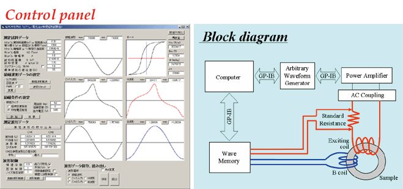
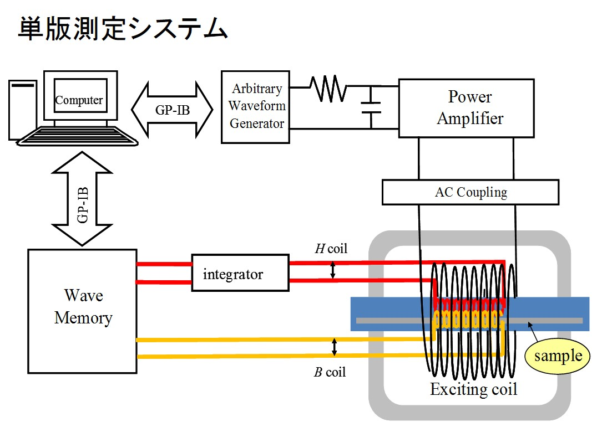
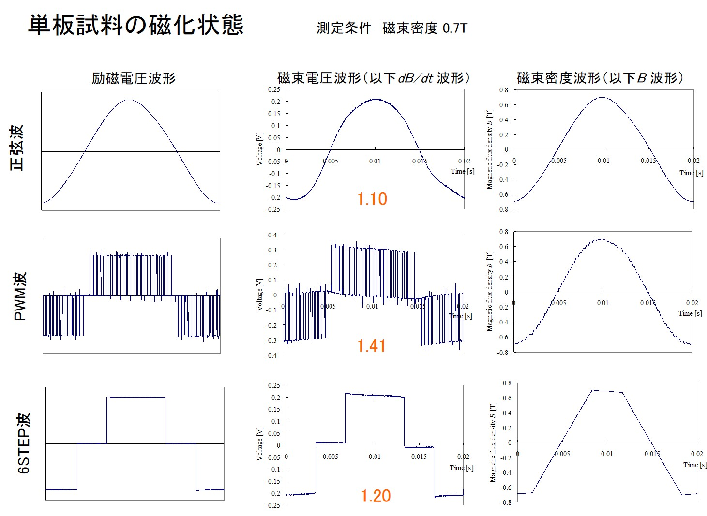
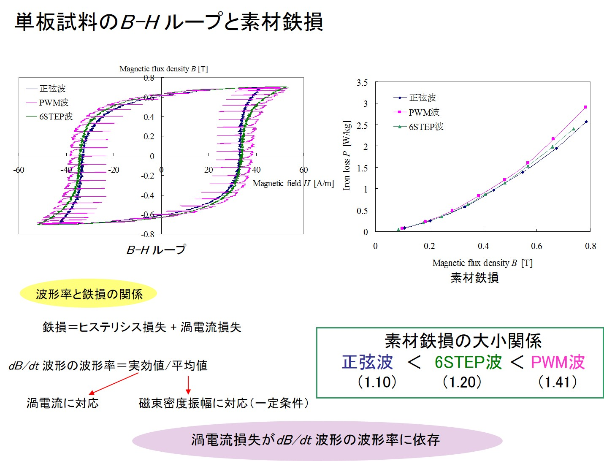
偏磁下・二次元磁気特性
直流偏磁を含む磁化状態における電磁鋼板の磁気特性、および二次元磁気特性の測定と解析。
圧粉磁心・軟磁性粉末
ガスアトマイズ粉末、水アトマイズ粉末、絶縁被膜、粒径、加圧成形、焼鈍と密度・透磁率・ヒステリシス損失・渦電流損失の関係。バインダーフリー圧粉磁心の開発。
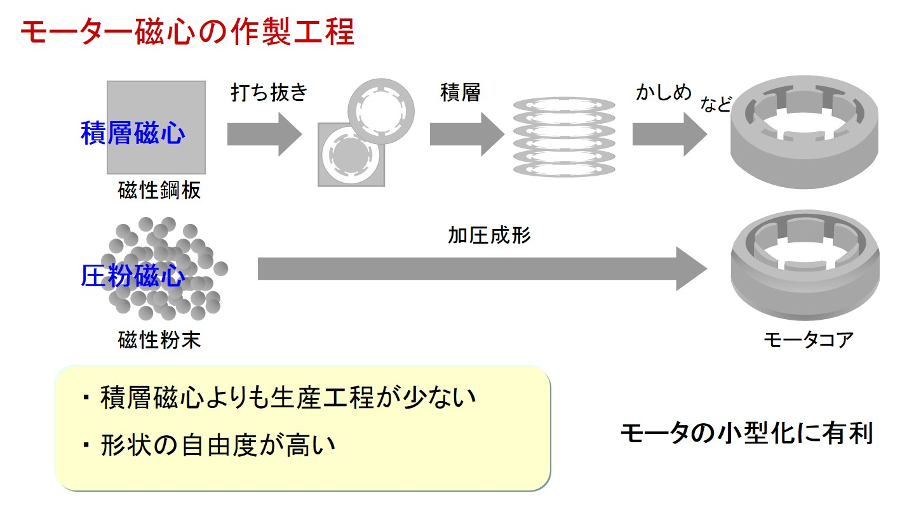
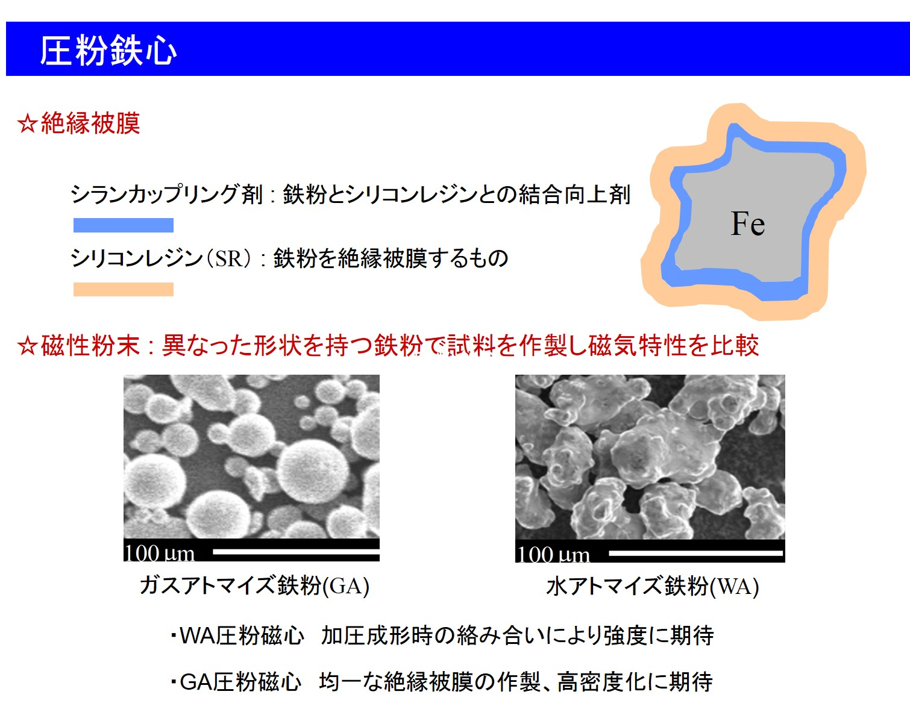
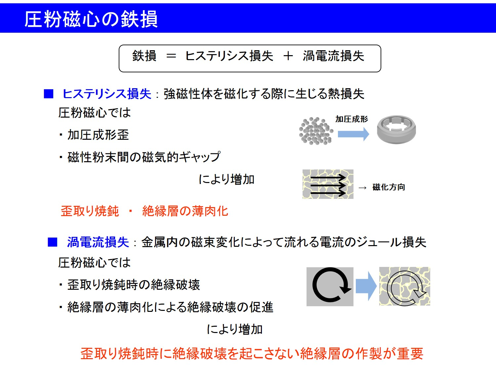
高効率モータ・磁心
モータ駆動状態での磁化状態、積層磁心と圧粉磁心の製造・特性比較、誘導モータの実機磁化測定、モータの低損失化。
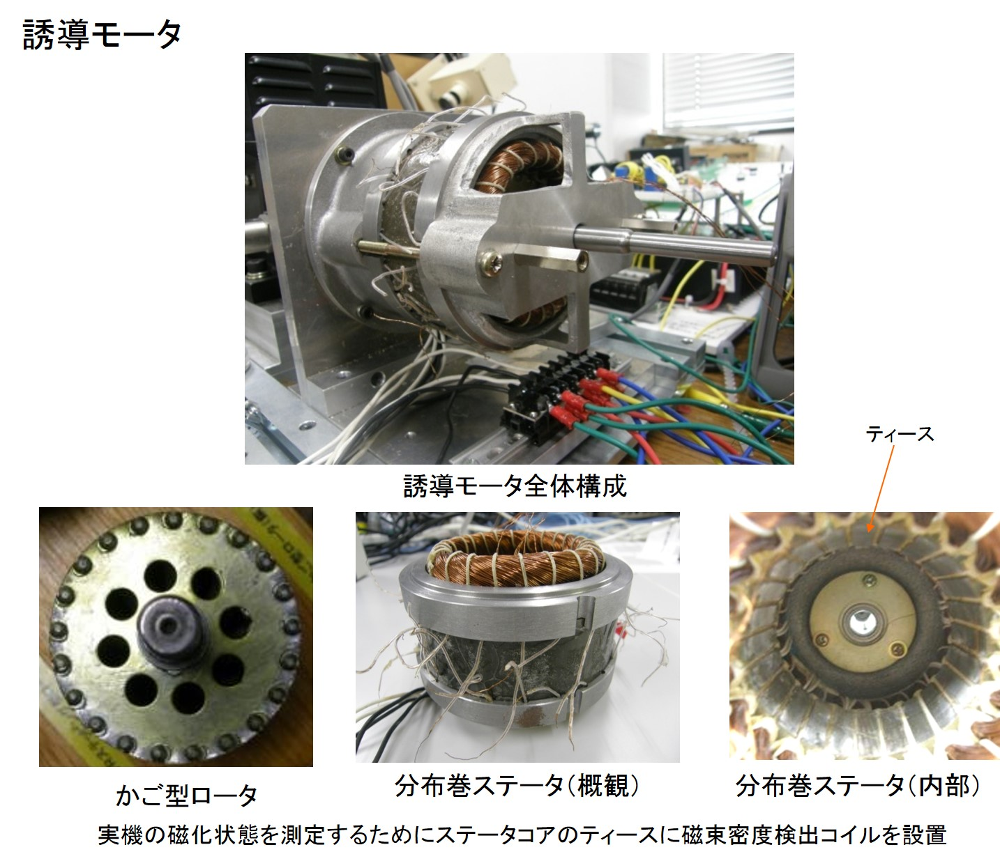
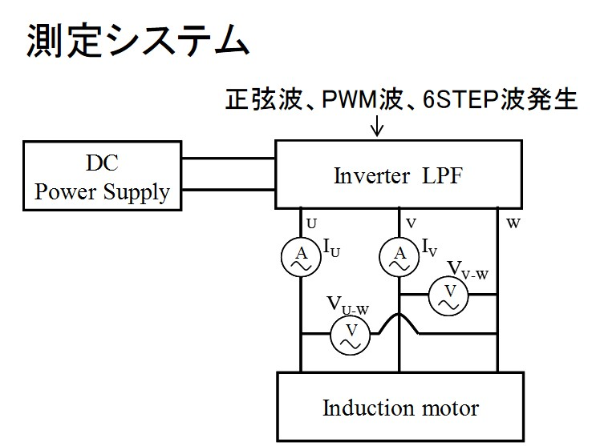
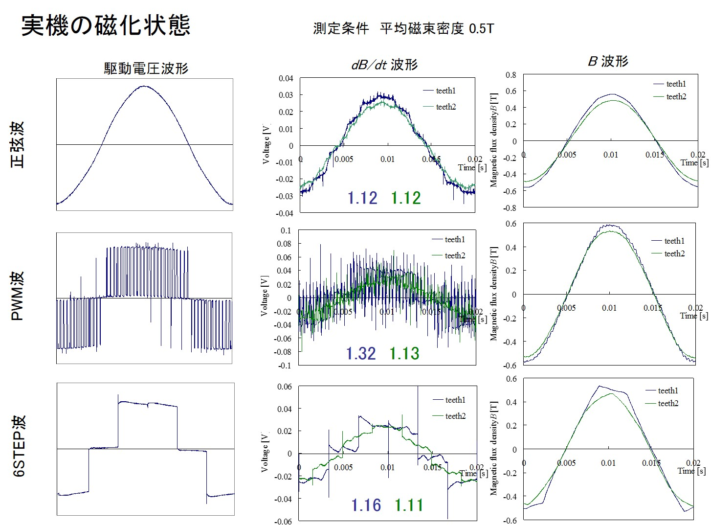
磁気シールド
軟磁性材料による磁束誘導、外部磁界の低減、磁気シールド構造と特性評価。
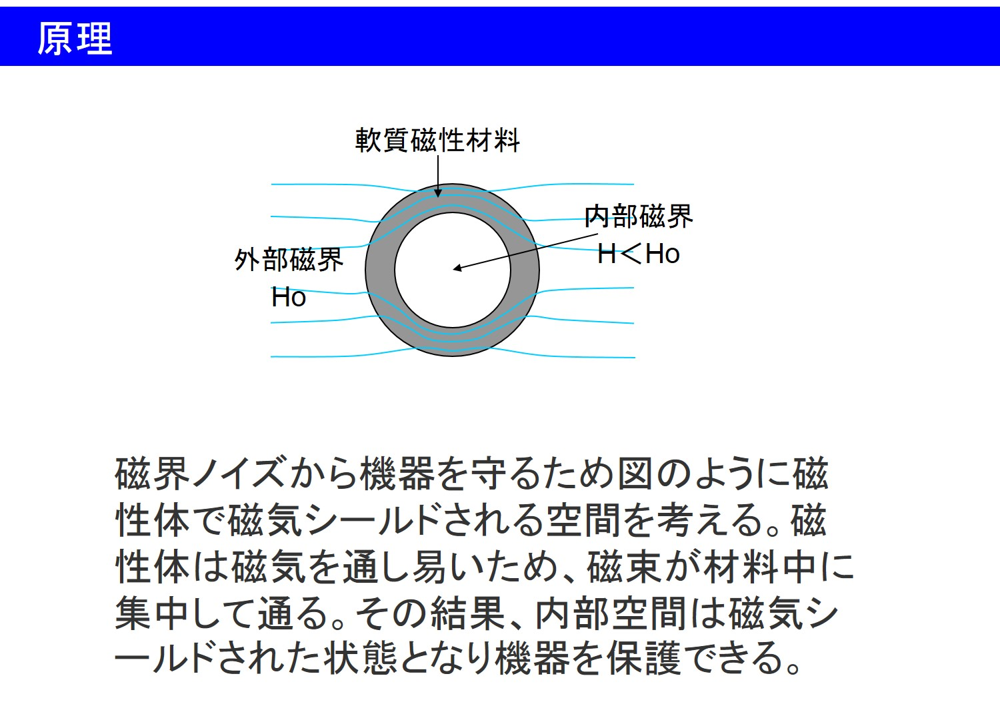
電磁波シールド
電磁波の反射・多重反射・減衰と渦電流損失、シールド性能SEの評価、ロックインアンプを用いた測定系とダイナミックレンジの改善。
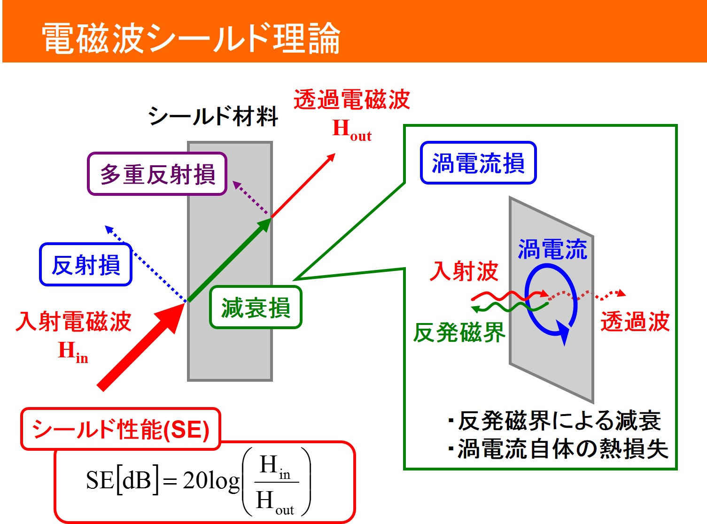
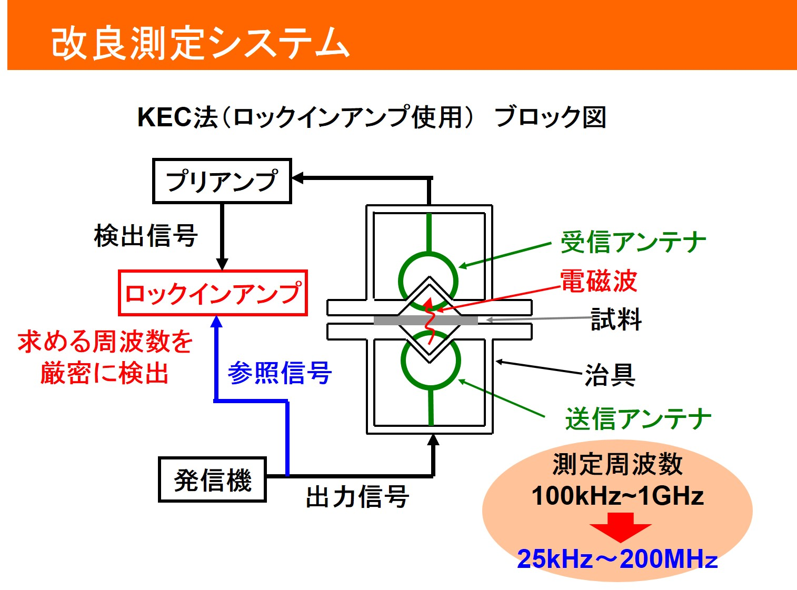
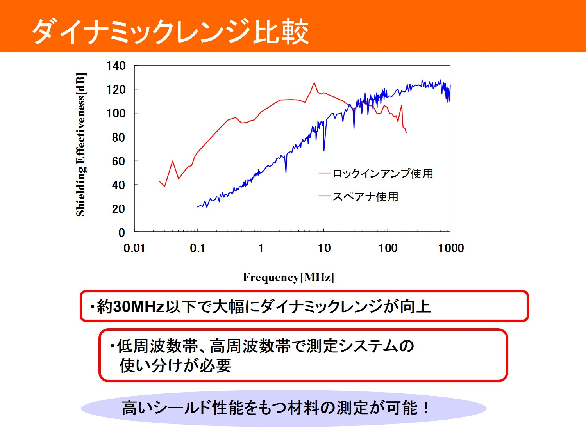
電磁界解析・シミュレーション
磁性材料、磁気シールド、モータなどの電磁界解析と磁束分布の検討。
異種金属接合
鉄―アルミニウム、チタン―アルミニウムなどの異種金属接合、抵抗スポット溶接、インサート材による接合強度の改善。
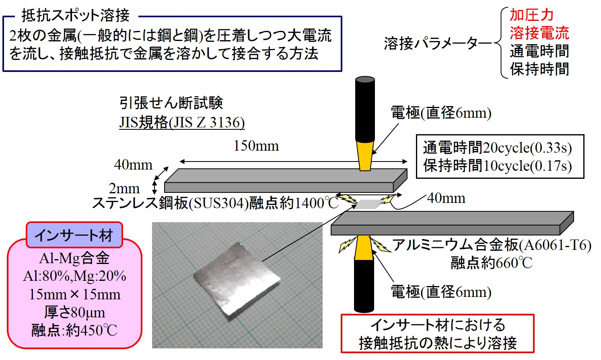
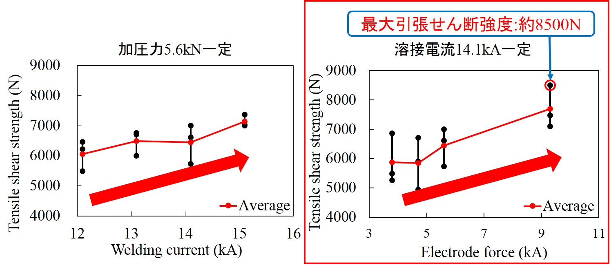
窒化アルミニウムの低温合成
旧研究室サイトで扱われていた窒化アルミニウムの低温合成。旧ページは「準備中」であり、詳しい成果は未確認。
可変永久磁石・可変磁場設計
Halbach配列などの永久磁石構成を利用した可変磁場設計と、加速器・プラズマ制御などへの応用に関する研究。
インバータ・モータ・バッテリーのシステム最適化
磁束密度波形制御と励磁条件の最適化による磁心損失低減、モータ駆動システムの効率向上を目指す研究。